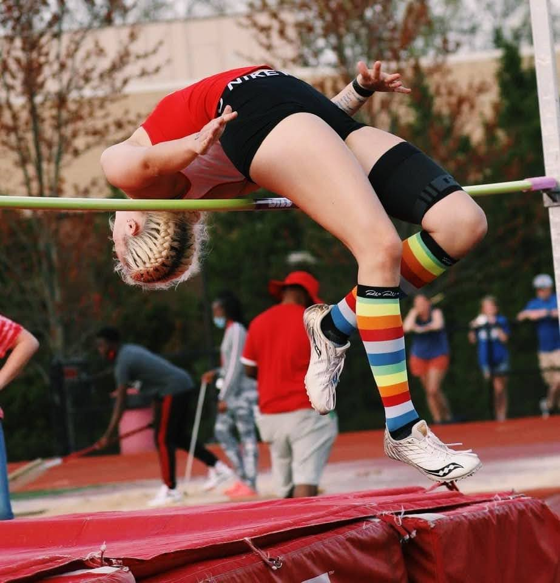

My Hobbies
Track and Field
I am currently running track for Northern Kentucky University. This season I plan on competing in the 100 meter hurdles, high jump, triple jump, long jump, and the heptathlon (a combination of seven events, 100 meter hurdles, high jump, long jump, javelin, shot put, 200 meter dash, 800 meter run).
I started running track in sixth grade for Turkey Foot Middle School. I started out with just the 100 and 300 meter hurdles. When got to my freshman year of highschool I added high jump, triple jump, and long jump to my repertoire. My adoption of these events led me to compete in the heptathlon during my summer club track season.
|  | |
| Video of my 60 meter hurdles state championship | Picture of me clearing 5'2" in high jump |
Gaming
I enjoy casually playing video games on my PC. Right now, I play Minecraft, Skyrim, Portal 2, and Overwatch. I am still very new to the world of gaming and am constantly discovering more new and fun games.
 |
 |
 |
|
| Minecraft | Skyrim | Portal 2 | Overwatch |
Plants
Over the years I have discovered my love for plants, and have since adopted many houseplants to take care of. I have spider plants, jade, and pothos, as well as my favorite plant, which I recieved from my dad on my ninth birthday and it is still alive to this day. I believe it is a kalanchoe plant. It has pretty pink flowers every year.
 |
 |
 |
 |
| Spider Plant | Jade | Pothos | Kalanchoe |